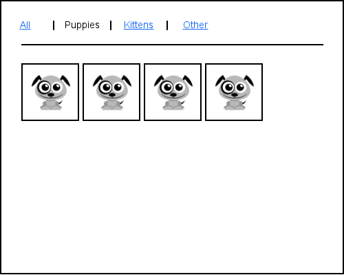
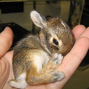
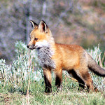
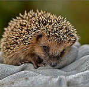
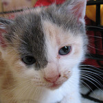
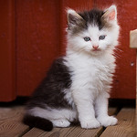
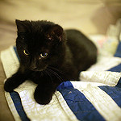
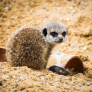
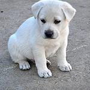

Your task is so write a simple application that shows a grid of images that can be selectively filtered.
Initially the grid shows all images.
When a filter is selected then only those images are shown.

The application should accept a JavaScript array of images.
{% highlight javascript %} var images = [ { image: "puppy-1.png", group: "Puppies" }, { question: "bunny-1.png", group: "Bunnies" }, { question: "kitten-1.png", group: "Kittens" }, { question: "fox-1.png", group: "Foxes" } ]; {% endhighlight %}The application should work on both small and large displays and should adjust it's width according to the size of it's container.
Feel free to enhance your application with nicer styles or improved functionality
Sample images to get you started (download as a zip file):
       
Images from Flickr Creative Commons
Thanks to Adorable Toon for the wireframe images.